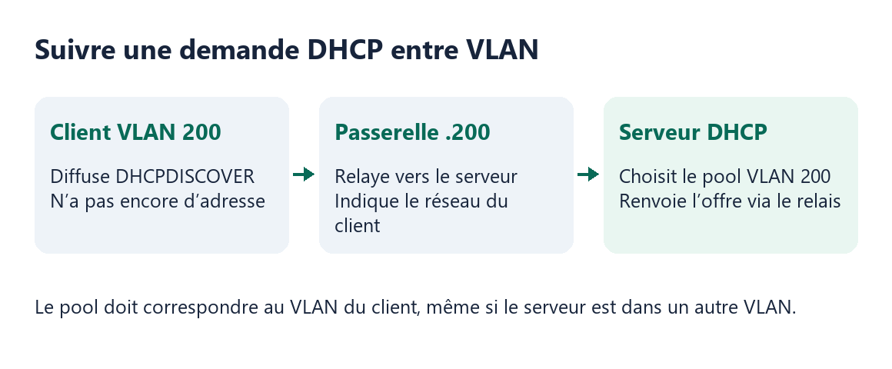
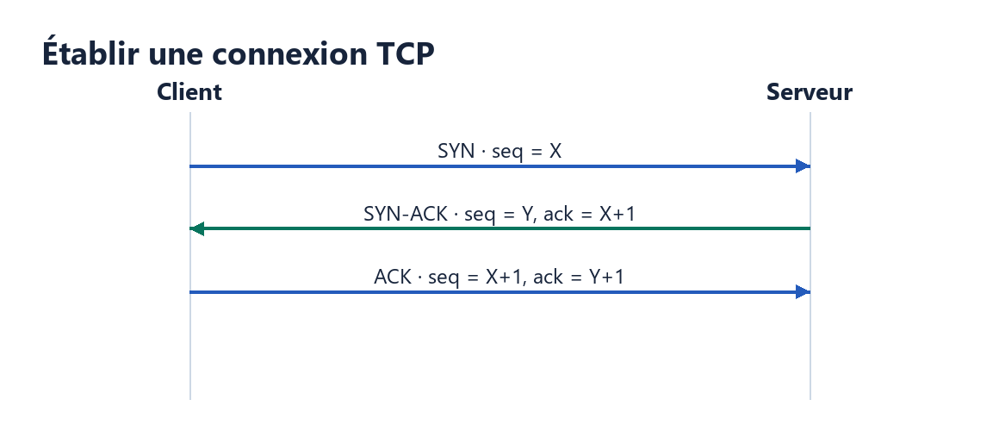

Comprendre le cours
Lire l’adressage IPv6 et les découvertes de voisins
Avec ip -6 addr distingue les adresses fe80:: des adresses configurées avec un autre préfixe. Une adresse link-local n’est pas routée vers un autre lien.
NDP (découverte des voisins et routeurs en IPv6) comporte notamment RS/RA pour les routeurs et NS/NA pour les voisins. Un hôte peut fabriquer une adresse avec SLAAC (autoconfiguration d’une adresse IPv6) si l’annonce fournit un préfixe et le drapeau d’autoconfiguration attendu. Il vérifie aussi l’absence de doublon avec DAD (vérification de l’unicité d’une adresse IPv6).

Suivre un établissement TCP
Une réponse SYN-ACK indique que le port TCP accepte cette tentative. Un RST peut indiquer un port fermé. Une absence de réponse peut avoir plusieurs causes, dont un filtrage ou une perte.
UDP n’établit pas de connexion avec cet échange. Un datagramme peut partir sans acquittement au niveau UDP. Pour interpréter l’absence de réponse, il faut aussi connaître le protocole applicatif.

Séparer le routage, le filtrage et la translation
Dans iptables, la table choisit une famille de traitements et la chaîne correspond à un point de passage. Consulte iptables -S pour filter et iptables -t nat -S pour nat. iptables -L -n -v affiche politiques et compteurs.
Le routage IPv4 doit être activé et les deux côtés doivent avoir un chemin de retour. Avec MASQUERADE, l’adresse de sortie de l’interface sert à la translation de source. Le suivi de connexion applique le traitement correspondant au retour.
Séparer les VLAN et relayer DHCP
Sur une ACL, la première règle correspondante décide et un refus implicite s’applique à la fin. Dans Packet Tracer, vérifie l’interface et le sens de la liste ainsi que la wildcard. Pour un /24, elle vaut 0.0.0.255.
Le relais annonce au serveur le réseau d’origine du client, typiquement avec giaddr. Si le routeur sert lui-même DHCP sur ses interfaces de VLAN, configure ses pools locaux sans ajouter un relais vers lui-même.
Sigles et acronymes
- ACK · Acknowledgment
- Accusé de réception.
Exemple. Après un SYN-ACK, le client envoie un ACK pour confirmer l’établissement TCP. - ACL · Access Control List
- Liste de règles d’accès.
Exemple. Sur un routeur, autoriser le réseau admin vers le serveur et refuser le réseau invité. - DAD · Duplicate Address Detection
- Vérification de l’unicité d’une adresse IPv6.
Exemple. Un poste teste si son adresse envisagée est déjà utilisée avant de s’en servir. - DHCP · Dynamic Host Configuration Protocol
- Distribution automatique de la configuration IP.
Exemple. Un PC obtient une adresse, un masque, une passerelle et souvent un serveur DNS. - IPv6 · Internet Protocol version 6
- Version d’IP à adresses de 128 bits.
Exemple. 2001:db8::1 est une adresse IPv6 d’exemple. - NA · Neighbor Advertisement
- Annonce de voisinage IPv6.
Exemple. Le voisin peut répondre à la sollicitation en donnant son adresse de liaison. - NAT · Network Address Translation
- Traduction d’adresses réseau.
Exemple. À la sortie vers Internet, une adresse privée peut être remplacée par l’adresse publique du routeur. - NDP · Neighbor Discovery Protocol
- Découverte des voisins et routeurs en IPv6.
Exemple. Un poste demande quelle interface possède une adresse IPv6 locale. - NS · Neighbor Solicitation
- Demande de voisinage IPv6.
Exemple. Un poste cherche l’adresse de liaison d’un voisin ou vérifie l’unicité d’une IPv6. - PAT · Port Address Translation
- Partage d’une adresse publique par translation de ports.
Exemple. Deux postes sortent avec la même IPv4 publique et des ports distincts. - RA · Router Advertisement
- Annonce IPv6 d’un routeur.
Exemple. Le routeur fournit des paramètres comme un préfixe aux postes du lien. - SLAAC · Stateless Address Autoconfiguration
- Autoconfiguration d’une adresse IPv6.
Exemple. Un poste construit son adresse à partir du préfixe annoncé par le routeur. - SYN · Synchronize
- Drapeau TCP qui initie la synchronisation d’une connexion.
Exemple. Le client envoie SYN, puis le serveur répond SYN-ACK. - TCP · Transmission Control Protocol
- Transport des données avec suivi des échanges et retransmission.
Exemple. Les routeurs BGP établissent une session TCP avant d’échanger leurs annonces. - UDP · User Datagram Protocol
- Transport par datagrammes sans établissement de connexion.
Exemple. Un client peut envoyer une requête DNS classique dans un datagramme UDP. - VLAN · Virtual Local Area Network
- Réseau local logique séparé sur une infrastructure partagée.
Exemple. Un switch sépare les postes du personnel et ceux des invités dans deux VLAN.
Du cours aux TD et TP
Le TD3 original sur iptables est téléchargeable. Les questions des TP1 à TP5 sont reformulées depuis les sujets intégrés aux comptes rendus. Les adresses de démonstration sont distinctes des relevés du laboratoire.
Questions TD & TP
TP1 · Tester les adresses link-local et lire NDP
Énoncé reformulé. Relever les types d’adresses IPv6 des deux postes, tester la connectivité et expliquer les messages découverts.
- Sous Linux, lance
ip -6 addr, puisping -6 fe80::abcd%eth0en remplaçant l’adresse et l’interface par celles du TP. Sous Windows, identifie l’index d’interface et précise-le après%selon le contexte. - Dans Wireshark, filtre
icmpv6et distingue NS, NA et Echo. Vérifie la règle locale autorisant le test de connectivité si la réponse manque. - Une fois le routeur ajouté, relève RS, RA, le préfixe et la route par défaut. Documente l’adresse obtenue et sa portée.
TP2 · Relever les séquences TCP et comparer les réponses Scapy
Énoncé reformulé. Installer le service FTP du TP, identifier les trois messages TCP et comparer les réponses à des SYN de test dans le laboratoire.
- Vérifie que
vsftpdtourne avecsystemctl status vsftpd. Lance la capture avant d’ouvrir une connexion de test. Filtretcp.port == 21si c’est le port configuré. - Relève les ports, les drapeaux et les séquences. Sur le SYN-ACK, l’acquittement ajoute 1 à la séquence du SYN. Sur l’ACK suivant, le client accuse réception du SYN serveur.
- Pour les sondes, utilise
sr1(IP(dst=cible)/TCP(dport=port, flags="S"), timeout=2)dans la maquette. Distingue réponse SYN-ACK, RST et absence de réponse.
TD3 et TP3 · Faire passer un paquet par le NAT Linux
Énoncé reformulé. Expliquer NAT et PAT, puis mettre en place une translation et valider les adresses observées.
- Active le routage IPv4 dans la maquette et vérifie l’adresse de passerelle du client. Contrôle la politique FORWARD et prévois les règles autorisant le test et son retour.
- Pour une interface de sortie
eth1, ajoute en maquetteiptables -t nat -A POSTROUTING -s 192.0.2.0/24 -o eth1 -j MASQUERADE. Remplace interface et réseau par ceux du TP. - Lis
iptables -t nat -L -v -net capture sur les deux interfaces. Compare adresses et ports. Une règle NAT ne remplace pas la politique de filtrage.
TP4 et TP5 · Isoler les accès et vérifier le DHCP des deux VLAN
Énoncé reformulé. Créer les VLAN, protéger les accès demandés par ACL, puis faire attribuer une adresse aux clients des VLAN 100 et 200 par un service DHCP unique.
- Attribue un sous-réseau différent à chaque VLAN. Déclare les interfaces de niveau trois et teste chaque passerelle depuis le VLAN correspondant.
- Dans le TP4, construis la liste selon les flux que l’énoncé autorise. Applique-la à l’interface et au sens appropriés. Contrôle les compteurs avec
show access-listset compare un flux autorisé et un flux refusé. - Dans le TP5, place les ports 1 à 10 dans le VLAN 100, les ports 11 à 20 dans le 200 et crée le trunk sur le port 24. Prépare un pool par réseau. Si le service est sur un autre équipement, configure
ip helper-address <IP_du_serveur>côté client. Renouvelle les baux et lis le résultat sur les deux postes.